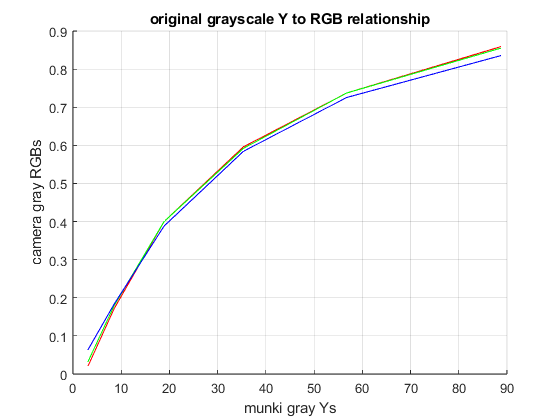
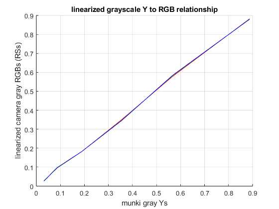
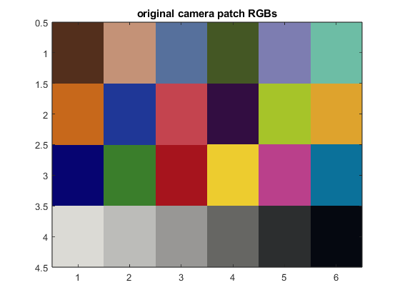
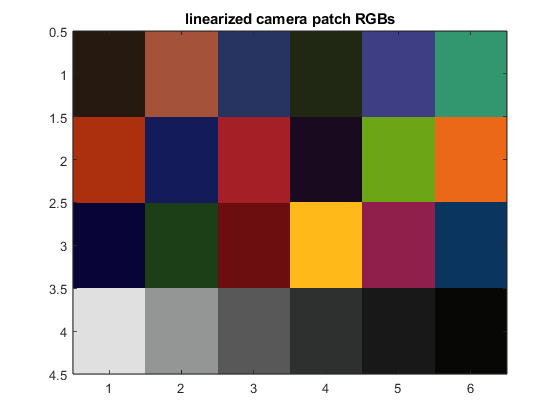
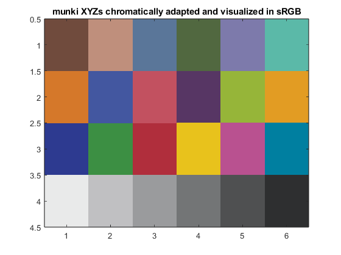
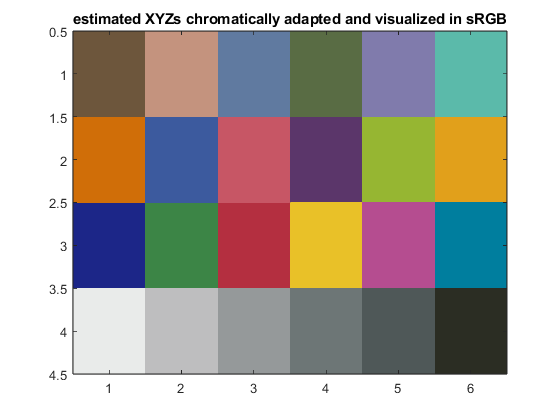

Project 5 Report
Team 5: Shakira Garnett, Hridiza Roy
Contents
Initialization
clear all; close all; clc; % load the CIE observer and illuminant data cie = loadCIEdata;
Step 3
cam_RGBs = [83, 196, 86, 68, 125, 109, 199, 31, 196, 50, 166, 222, 6, 58,... 166, 237, 186, 11, 219, 188, 152, 102, 44, 5;... 47,146,112, 87,125,189,104, 55, 68, 13,196,163, 4,126, 20, 204,... 64,113,218,188,151,102, 46, 8; 28,119,156, 36,177,165, 27, 151,... 79, 65, 41, 45,113, 43, 29, 47,139,154,213,185,149, 99, 47, 16]; cam_rgbs = cam_RGBs / 255; cam_gray_rgbs = cam_rgbs(:, 19:24);
Step 4
% Load the data data = load('munki_CC_XYZs_Labs.txt'); % Separate into XYZ and Lab arrays munki_XYZs = data(:, 2:4)'; % Columns 2-4 for XYZ values, transpose to make it 3x24 munki_Labs = data(:, 5:7)'; % Columns 5-7 for Lab values, transpose to make it 3x24 % Extract Y values for gray patches #19-24 gray_Y_values = munki_XYZs(2, 19:24); % Normalize the Y values by dividing by 100 normalized_gray_Ys = gray_Y_values / 100; % Flip the vector so it runs from low (black) to high (white) munki_gray_Ys = fliplr(normalized_gray_Ys);
Step 5
% Plot the Tone Transfer Functions (TTFs) figure; hold on; % Plot each channel (Red, Green, and Blue) plot(gray_Y_values, cam_gray_rgbs(1, :), '-r'); % Red channel plot(gray_Y_values, cam_gray_rgbs(2, :), '-g'); % Green channel plot(gray_Y_values, cam_gray_rgbs(3, :), '-b'); % Blue channel % Labeling the plot xlabel('munki gray Ys'); ylabel('camera gray RGBs'); title('original grayscale Y to RGB relationship'); grid on; hold off;
Step 6
% Define indices for color channels r = 1; g = 2; b = 3; % a) fit low-order polynomial functions between normalized % camera-captured gray RGBs and the munki-measured gray Ys cam_polys(r,:)=polyfit(cam_gray_rgbs(r,:),normalized_gray_Ys,3); cam_polys(g,:)=polyfit(cam_gray_rgbs(g,:),normalized_gray_Ys,3); cam_polys(b,:)=polyfit(cam_gray_rgbs(b,:),normalized_gray_Ys,3); % b) use the functions to linearize the camera data cam_RSs(r,:) = polyval(cam_polys(r,:),cam_rgbs(r,:)); cam_RSs(g,:) = polyval(cam_polys(g,:),cam_rgbs(g,:)); cam_RSs(b,:) = polyval(cam_polys(b,:),cam_rgbs(b,:)); % c) clip out of range values cam_RSs(cam_RSs<0) = 0; cam_RSs(cam_RSs>1) = 1;
Step 7
% Extract radiometric scalars for gray patches (#19-24) gray_RSs = cam_RSs(:, 19:24); % Plot the TTFs using the radiometric scalars for verification figure; hold on; % Plot each channel's radiometric scalars for gray patches plot(normalized_gray_Ys, gray_RSs(1, :), '-r'); % Red channel plot(normalized_gray_Ys, gray_RSs(2, :), '-g'); % Green channel plot(normalized_gray_Ys, gray_RSs(3, :), '-b'); % Blue channel % Label the plot for clarity xlabel('munki gray Ys'); ylabel('linearized camera gray RGBs (RSs)'); title('linearized grayscale Y to RGB relationship'); grid on; hold off;
Step 8
% visualize the original camera RGBs pix = reshape(cam_rgbs', [6 4 3]); pix = uint8(pix*255); pix = imrotate(pix, -90); pix = flipdim(pix,2); figure; image(pix); title('original camera patch RGBs'); % visualize the linearized camera RGBs pix = reshape(cam_RSs', [6 4 3]); pix = uint8(pix*255); pix = imrotate(pix, -90); pix = flipdim(pix,2); figure; image(pix); title('linearized camera patch RGBs'); 
Step 9
% use the munki-measured ColorChecker XYZs and camera-captured RGB RSs to % derive a 3x3 matrix that can be used to estimate XYZs from camera RGBs cam_matrix3x3 = munki_XYZs * pinv(cam_RSs)
cam_matrix3x3 = 42.1733 25.5418 22.5755 20.8446 56.9833 16.4482 -1.4126 3.9189 77.4845
Step 10
% estimate the ColorChecker XYZs from the linearized camera rgbs using % the 3x3 camera matrix cam_XYZs = cam_matrix3x3 * cam_RSs
cam_XYZs =
Columns 1 through 7
9.9881 40.6913 20.2649 10.9455 28.1071 33.2503 34.4405
9.5310 35.6141 21.1540 12.6487 27.3932 44.9620 25.6034
4.6532 18.1834 30.0899 6.3029 40.8227 35.6976 4.0742
Columns 8 through 14
13.9377 33.8050 8.1306 36.5103 51.2355 6.5105 13.0420
13.5392 23.0515 6.3807 47.4240 43.9657 5.0990 17.8175
27.7568 11.0148 9.7830 8.6113 7.5458 16.6086 7.7552
Columns 15 through 21
20.6221 62.9629 33.5519 15.3683 79.5116 52.4961 31.3031
12.8482 63.9356 23.4835 18.7891 82.9864 54.9025 32.6103
4.2740 8.9579 22.8486 29.4141 70.3343 46.7538 27.5271
Columns 22 through 24
16.4578 8.5953 2.4104
17.1957 8.9872 2.5133
14.6003 7.7570 2.0393
Step 11
% convert XYZ to Lab XYZ_D50 = ref2XYZ(cie.PRD, cie.cmf2deg, cie.illD50); lab_D50_Cam = XYZ2Lab(cam_XYZs, XYZ_D50); % Calculate deltaEab DEab_D50 = deltaEab(lab_D50_Cam, munki_Labs); % print table print_camera_model_error(munki_Labs, lab_D50_Cam, DEab_D50)
Camera model color error
camera->camera_RGBs->camera_model->estimated_XYZs
colormunki measured vs. camera estimated ColorChecker Lab values
measured estimated
patch # L a b L a b dEab
1 37.1865 14.9985 15.2592 36.9872 6.4315 14.6656 8.5899
2 65.8188 16.8695 18.0267 66.2240 20.6309 20.9691 4.7927
3 49.9949 -3.1841 -23.5159 53.1176 -0.6419 -23.7110 4.0314
4 42.6411 -15.3251 20.0423 42.2291 -8.8877 15.5403 7.8662
5 54.6852 9.6978 -26.7126 59.3365 6.8026 -28.2816 5.6990
6 71.2441 -33.1391 -0.5010 72.8668 -32.4177 1.9639 3.0380
7 62.2558 34.1094 57.7774 57.6587 37.2695 53.6289 6.9520
8 39.5890 9.9980 -43.6388 43.5647 5.6655 -36.3890 9.3346
9 51.8424 48.1403 16.0636 55.1254 45.9931 20.4212 5.8632
10 29.4495 22.4255 -21.7661 30.3533 19.4600 -18.3278 4.6296
11 71.6264 -24.3441 57.6850 74.4602 -28.1819 61.8088 6.3059
12 72.2288 20.6039 69.0149 72.2056 24.7893 61.9773 8.1882
13 28.6402 18.5907 -51.4092 27.0150 18.1945 -43.0396 8.5352
14 54.6309 -39.5493 32.8341 49.2740 -24.6900 21.6141 19.3748
15 42.5988 54.6049 25.7315 42.5336 46.7154 26.3712 7.9157
16 82.4265 3.8689 78.8570 83.9322 3.0457 76.8934 2.6078
17 51.5476 49.5154 -14.3758 55.5669 43.2078 -6.9601 10.5324
18 49.3892 -26.5473 -28.6645 50.4395 -15.2803 -27.2507 11.4039
19 95.4458 -0.4414 0.0244 93.0085 -0.9866 -1.6748 3.0207
20 80.0339 0.1309 -0.9345 78.9851 -1.1380 -1.7214 1.8247
21 66.0107 -0.0004 -1.1463 63.8441 -0.5092 -1.0398 2.2281
22 50.5546 -0.6207 -0.9616 48.5057 -0.6845 -1.0584 2.0522
23 35.1532 -0.0632 -0.9708 35.9597 -0.6051 -1.3487 1.0425
24 20.3224 -0.2858 -0.5603 17.9787 -0.2613 0.3301 2.5073
min 1.0425
max 19.3748
mean 6.1807
Step 12
% split the radiometric scalars (cam_RSs) into r,g,b vectors RSrgbs = cam_RSs; RSrs = RSrgbs(1,:); RSgs = RSrgbs(2,:); RSbs = RSrgbs(3,:); % create vectors of these RSs with multiplicative terms to % represent interactions and square terms to represent non-linearities in % the RGB-to-XYZ relationship RSrgbs_extd = [RSrgbs; RSrs.*RSgs; RSrs.*RSbs; RSgs.*RSbs; RSrs.*RSgs.*RSbs; ... RSrs.^2; RSgs.^2; RSbs.^2; ones(1,size(RSrgbs,2))]; % find the extended (3x11) matrix that relates the RS and XYZ datasets cam_matrix3x11 = munki_XYZs * pinv(RSrgbs_extd)
cam_matrix3x11 =
Columns 1 through 7
64.7600 19.3070 20.6893 39.5074 -48.1134 53.4091 42.5711
28.6057 71.3533 15.1166 25.8634 -38.4367 45.8319 59.4179
3.4950 -10.7304 115.1717 1.4706 -16.0630 22.1297 67.3254
Columns 8 through 11
-32.3731 -34.3686 -23.8248 -0.3033
-14.6694 -53.9021 -32.5543 -0.3189
-7.0171 8.9373 -95.1470 -1.1015
Step 13
% estimate XYZs from the RSs using the extended matrix and RS representation
cam_XYZs_estimated = cam_matrix3x11 * RSrgbs_extd
cam_XYZs_estimated =
Columns 1 through 7
11.6832 41.2536 18.8800 11.9038 24.7386 31.4972 36.1428
11.0826 37.0964 20.0062 14.4769 23.2169 43.0466 27.1929
4.7149 19.9469 29.1456 6.2052 34.3058 36.0678 2.7490
Columns 8 through 14
11.6244 32.5605 8.7029 34.1370 49.9654 5.1494 12.7912
11.1912 21.6540 6.3410 43.5957 45.1202 3.3893 19.5657
27.5455 11.7475 11.7421 7.7742 5.6170 19.0951 7.2059
Columns 15 through 21
23.3274 60.5831 29.1095 13.0382 85.4983 53.5147 32.3123
13.4087 60.6942 18.6406 17.8275 88.9393 55.3804 33.8454
4.9519 8.4111 22.9666 28.4469 73.4523 46.0468 28.6614
Columns 22 through 24
17.5236 9.2647 2.4774
18.7723 10.0695 2.7110
16.1532 8.6313 1.5852
Step 14
% Calculate XYZ values for cam_XYZs XYZ_D50 = ref2XYZ(cie.PRD, cie.cmf2deg, cie.illD50); lab_D50_Cam_estimated = XYZ2Lab(cam_XYZs_estimated, XYZ_D50); % Calculate deltaEab DEab = deltaEab(lab_D50_Cam_estimated, munki_Labs); % Print table print_extended_camera_model_error(munki_Labs, lab_D50_Cam_estimated, DEab)
Extended camera model color error
camera->camera_RGBs->extended_camera_model->estimated_XYZs
colormunki measured vs. camera estimated ColorChecker Lab values
measured estimated
patch # L a b L a b dEab
1 37.1865 14.9985 15.2592 39.7192 7.2522 19.0389 8.9836
2 65.8188 16.8695 18.0267 67.3493 17.5005 19.1239 1.9861
3 49.9949 -3.1841 -23.5159 51.8442 -2.0851 -24.3962 2.3243
4 42.6411 -15.3251 20.0423 44.9092 -13.5707 20.6017 2.9214
5 54.6852 9.6978 -26.7126 55.2951 10.4110 -26.3405 1.0095
6 71.2441 -33.1391 -0.5010 71.5866 -33.1732 -0.7645 0.4334
7 62.2558 34.1094 57.7774 59.1524 36.5820 65.2221 8.4361
8 39.5890 9.9980 -43.6388 39.9006 6.0541 -42.3526 4.1601
9 51.8424 48.1403 16.0636 53.6580 47.9374 15.6732 1.8681
10 29.4495 22.4255 -21.7661 30.2570 24.9032 -24.6571 3.8921
11 71.6264 -24.3441 57.6850 71.9574 -25.4083 60.6494 3.1669
12 72.2288 20.6039 69.0149 72.9710 18.1156 71.7403 3.7643
13 28.6402 18.5907 -51.4092 21.5402 26.4820 -58.0582 12.5257
14 54.6309 -39.5493 32.8341 51.3426 -35.2623 27.3801 7.6772
15 42.5988 54.6049 25.7315 43.3727 55.6408 24.0684 2.1066
16 82.4265 3.8689 78.8570 82.2141 4.9158 75.9130 3.1318
17 51.5476 49.5154 -14.3758 50.2641 49.8029 -16.3270 2.3532
18 49.3892 -26.5473 -28.6645 49.2863 -24.7680 -27.6675 2.0422
19 95.4458 -0.4414 0.0244 95.5550 -0.4788 -0.0458 0.1352
20 80.0339 0.1309 -0.9345 79.2599 0.3011 -0.4091 0.9508
21 66.0107 -0.0004 -1.1463 64.8396 -1.1463 -1.2030 1.6394
22 50.5546 -0.6207 -0.9616 50.4198 -3.0722 -1.6055 2.5383
23 35.1532 -0.0632 -0.9708 37.9670 -3.6036 -1.1832 4.5274
24 20.3224 -0.2858 -0.5603 18.8471 -2.6603 6.5196 7.6118
min 0.1352
max 12.5257
mean 3.7577
Step 15
% save the (extended) camera model for use in later projects save('cam_model.mat', 'cam_polys', 'cam_matrix3x11');
Step 16
Include a listing of the camRGB2XYZ function
function cam_XYZs = camRGB2XYZ(cam_model, cam_RGBs) % Load cam_polys and cam_matrix3x11 from the cam_model file load(cam_model, 'cam_polys', 'cam_matrix3x11'); % Normalize cam_RGBs to the range 0-1 cam_rgbs = cam_RGBs / 255; % Define indices for color channels r = 1; g = 2; b = 3; % linearize the camera data cam_RSs(r,:) = polyval(cam_polys(r,:), cam_rgbs(r,:)); cam_RSs(g,:) = polyval(cam_polys(g,:), cam_rgbs(g,:)); cam_RSs(b,:) = polyval(cam_polys(b,:), cam_rgbs(b,:)); % clip out of range values cam_RSs(cam_RSs<0) = 0; cam_RSs(cam_RSs>1) = 1; % split the radiometric scalars (cam_RSs) into r,g,b vectors RSrgbs = cam_RSs; RSrs = RSrgbs(1,:); RSgs = RSrgbs(2,:); RSbs = RSrgbs(3,:); % create vectors of these RSs with multiplicative terms to % represent interactions and square terms to represent non-linearities in % the RGB-to-XYZ relationship RSrgbs_extd = [RSrgbs; RSrs.*RSgs; RSrs.*RSbs; RSgs.*RSbs; RSrs.*RSgs.*RSbs; ... RSrs.^2; RSgs.^2; RSbs.^2; ones(1,size(RSrgbs,2))]; % Return estimated XYZ values cam_XYZs = cam_matrix3x11 * RSrgbs_extd; end
% test that the camRGB2XYZ function works correctly cam_XYZs = camRGB2XYZ('cam_model.mat', cam_RGBs)
cam_XYZs =
Columns 1 through 7
11.6832 41.2536 18.8800 11.9038 24.7386 31.4972 36.1428
11.0826 37.0964 20.0062 14.4769 23.2169 43.0466 27.1929
4.7149 19.9469 29.1456 6.2052 34.3058 36.0678 2.7490
Columns 8 through 14
11.6244 32.5605 8.7029 34.1370 49.9654 5.1494 12.7912
11.1912 21.6540 6.3410 43.5957 45.1202 3.3893 19.5657
27.5455 11.7475 11.7421 7.7742 5.6170 19.0951 7.2059
Columns 15 through 21
23.3274 60.5831 29.1095 13.0382 85.4983 53.5147 32.3123
13.4087 60.6942 18.6406 17.8275 88.9393 55.3804 33.8454
4.9519 8.4111 22.9666 28.4469 73.4523 46.0468 28.6614
Columns 22 through 24
17.5236 9.2647 2.4774
18.7723 10.0695 2.7110
16.1532 8.6313 1.5852
Step 17
XYZ_D65 = ref2XYZ(cie.PRD, cie.cmf2deg, cie.illD65); % visualize the munki-measured XYZs as an sRGB image munki_XYZs_D65 = catBradford(munki_XYZs, XYZ_D50, XYZ_D65); munki_XYZs_sRGBs = XYZ2sRGB(munki_XYZs_D65); pix = reshape(munki_XYZs_sRGBs', [6 4 3]); pix = uint8(pix*255); pix = imrotate(pix, -90); pix = flipdim(pix,2); figure; image(pix); title('munki XYZs chromatically adapted and visualized in sRGB'); % visualize the camera-estimated XYZs as an sRGB image cam_XYZs_D65 = catBradford(cam_XYZs, XYZ_D50, XYZ_D65); cam_XYZs_sRGBs = XYZ2sRGB(cam_XYZs_D65); pix = reshape(cam_XYZs_sRGBs', [6 4 3]); pix = uint8(pix*255); pix = imrotate(pix, -90); pix = flipdim(pix,2); figure; image(pix); title('estimated XYZs chromatically adapted and visualized in sRGB'); 
Feedback
i. Who did which parts
Shakira - parts 2 - 10
Hridiza - parts 1, 11 - 18
ii. Problems
- No issues with this project
iii. Valuable parts
- Learning how to compare estimated and measured XYZ values in practice
- Practically seeing how the estimation models work
iv. Improvements
- Perhaps there were slightly too many hints for the code for this project